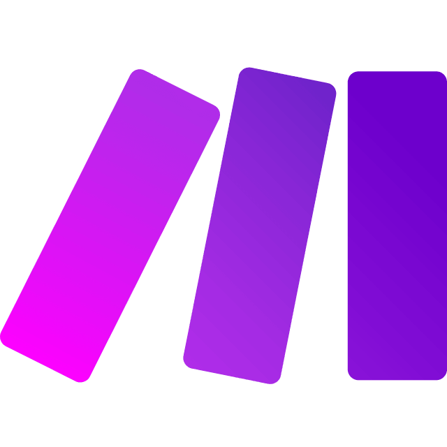
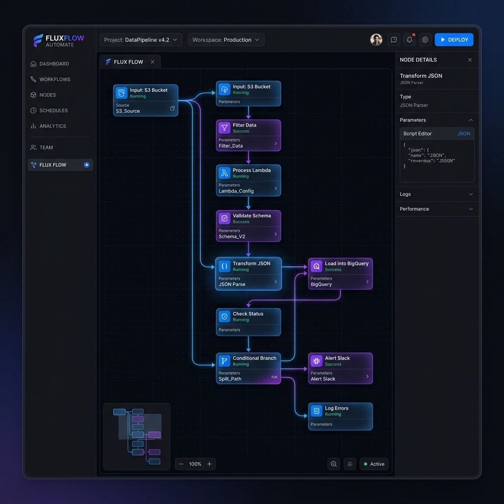
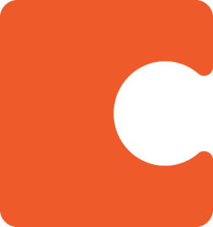
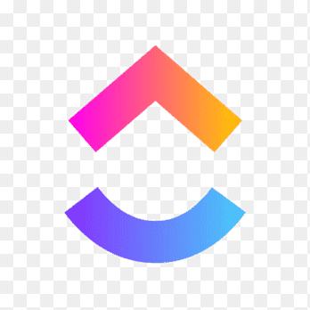
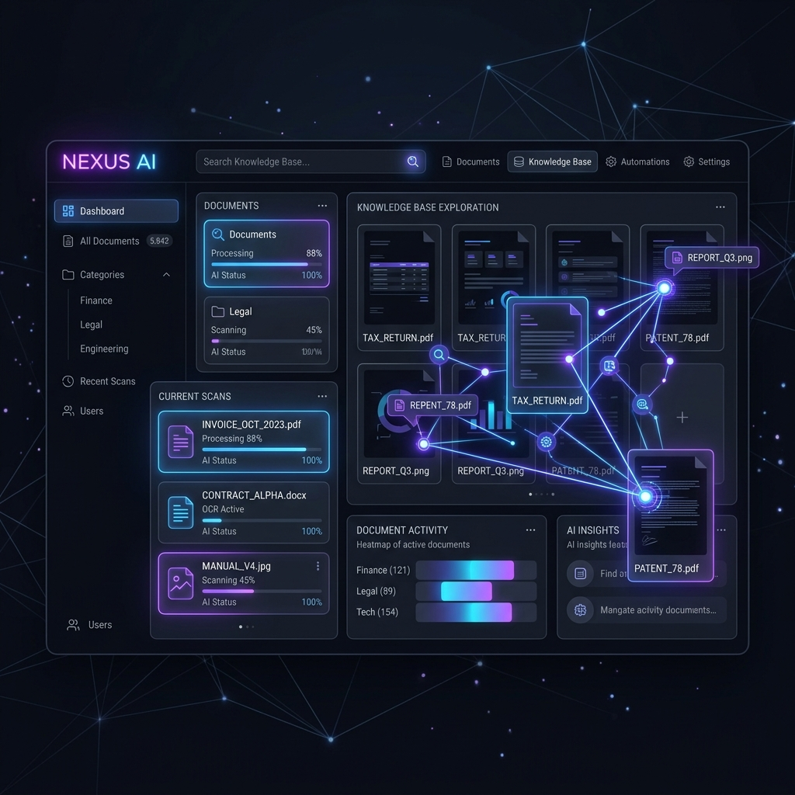
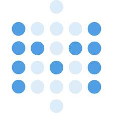
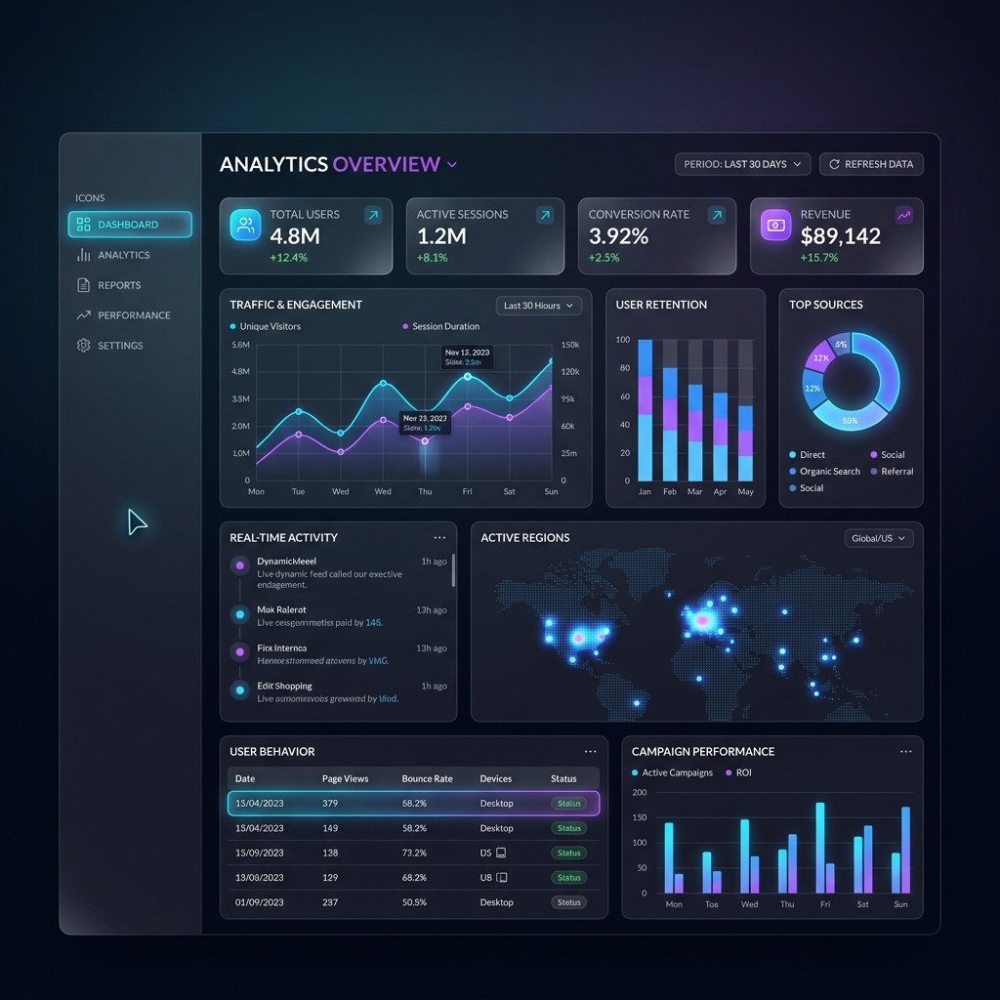
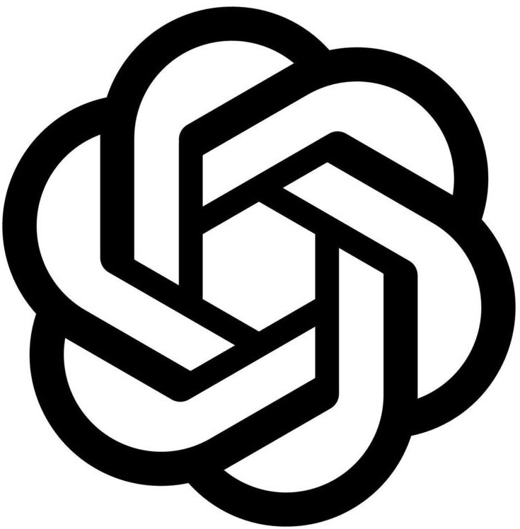
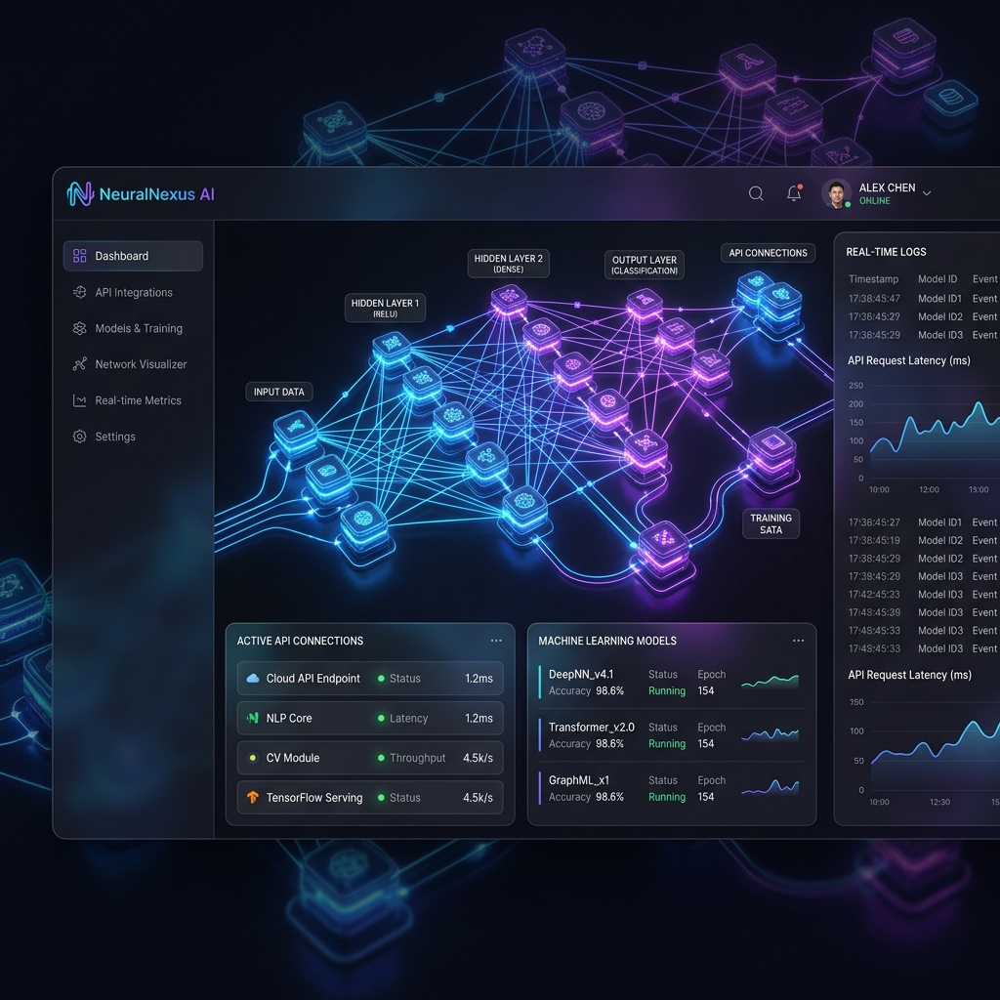
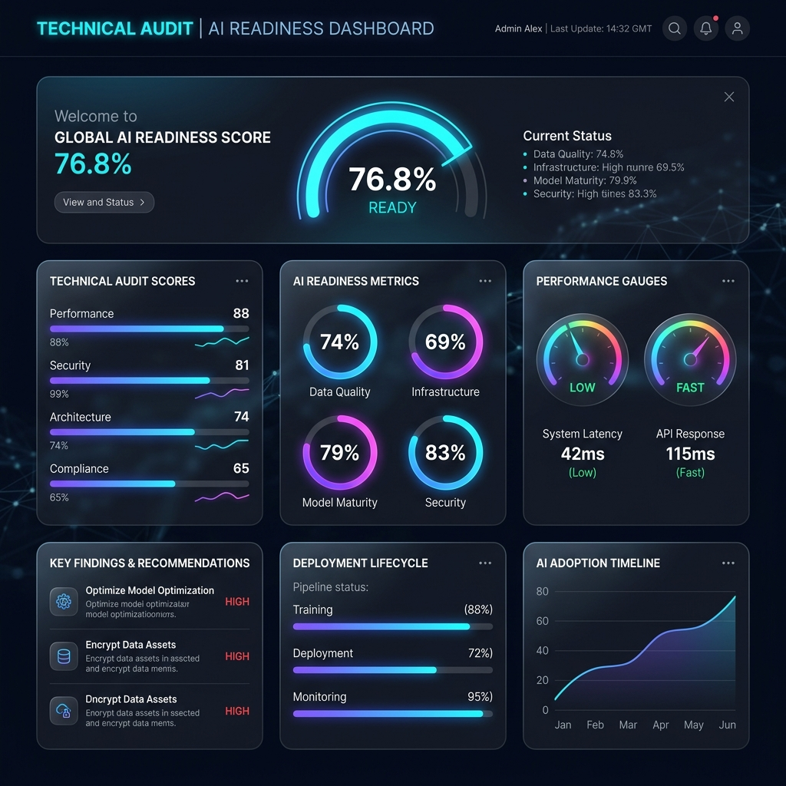

Internal Workflow Automation
We map out your current business processes, identifying bottlenecks and redundant manual tasks.
By integrating top-tier automation tools with your CRM, accounting software, and communication channels, we guarantee significant time-saving. Your team can stop moving data and start making decisions.
- CRM automated data entry
- Invoicing & Bookkeeping automation
- Custom API integrations


Lead Gen Pipeline Automation
Sales teams waste countless hours researching and manually entering prospect data. We automate your entire top-of-funnel.
From scraping targeted prospect lists to automated outreach campaigns using AI-personalized messaging, we ensure your calendar stays full of qualified meetings.
- Automated lead scraping & enrichment
- AI-assisted cold email sequencing
- Meeting scheduling workflows

Knowledge Base Management
Turn unstructured company data (PDFs, SOPs, Notion docs) into intelligent AI vectors.
We build secure, custom LLM-powered chatbots for internal employee onboarding or robust customer support, ensuring instant answers with 100% accuracy.



Reporting & Analytics
Scattered data across platforms makes leadership difficult. We build automated data pipelines.
We aggregate data from all your tools into a single, real-time dashboard. Automate weekly KPI reports directly to your Slack or email.


AI Integration
Seamlessly bring the latest machine learning models directly into your custom software stack.
We connect cutting-edge machine learning APIs directly into your workflows to add proprietary predictive intelligence to your agency tools.


Automation Readiness Assessment
For businesses that know they need automation but don't know where to start.
Our comprehensive audit reviews your current tech stack, interviews key stakeholders, and delivers a step-by-step roadmap for implementing high-ROI automations.
Get Assessed